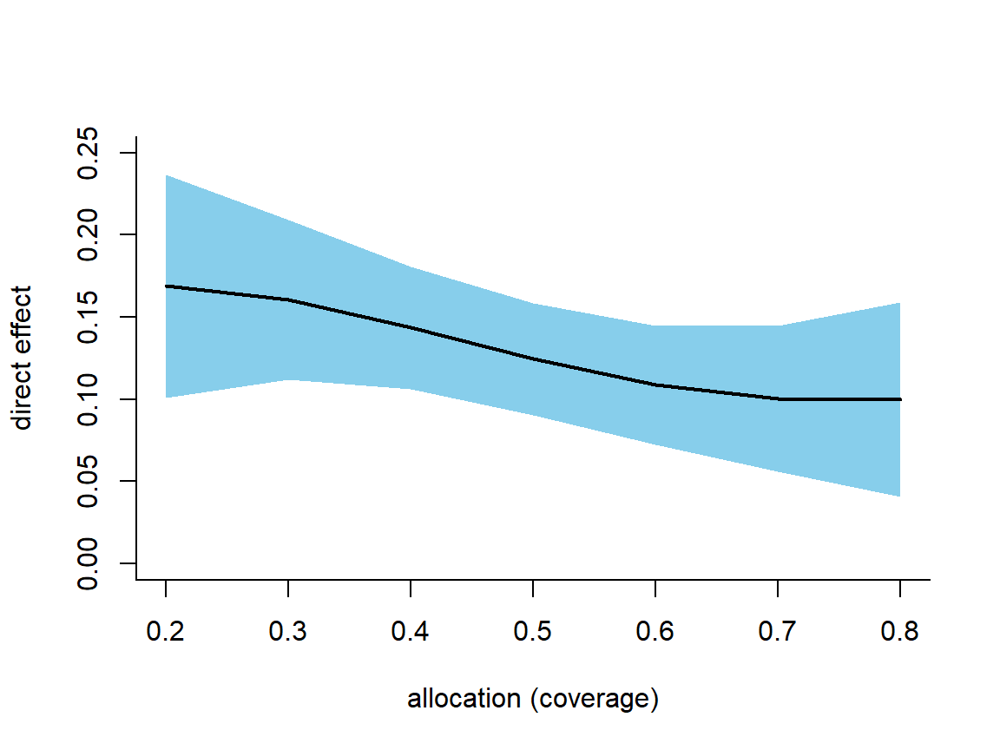

30 Interference and Spillover Effects
Most of the causal-inference machinery in this book rests, often silently, on the assumption that one unit’s treatment does not affect another unit’s outcome. That assumption is convenient and frequently false. When a vaccinated person lowers an unvaccinated neighbor’s risk of infection, when a price promotion to one customer cannibalizes a friend’s purchase, when a deworming program in one school reduces transmission in a nearby school, or when a regulatory shock to one bank propagates through interbank exposures, the outcome of a unit depends on the treatment status of others. This phenomenon goes by two closely related names. Statisticians tend to call it interference, meaning a violation of the no-interference half of the Stable Unit Treatment Value Assumption. Economists and applied researchers more often call it spillover, peer effect, externality, or contagion. The vocabulary differs but the structural problem is the same, and the goal of this chapter is to make that problem precise, to show what is and is not identified once we admit it, and to connect the experimental theory to the quasi-experimental and observational designs developed elsewhere in the book.
The chapter proceeds from designs the analyst controls toward data the analyst merely observes. It first defines interference and the SUTVA assumption it violates, rebuilds the potential-outcomes framework around exposure mappings, and develops the design-based Horvitz-Thompson estimators that exploit a known randomization (Aronow and Samii 2017), together with the modern theory of what remains estimable when the exposure mapping is unknown or wrong (Sävje et al. 2021; Leung 2022) and the randomization tests that stay exact under interference (Athey et al. 2018; Basse et al. 2019). It then develops the partial-interference designs that make spillover estimation routine: the two-stage randomized designs of Hudgens and Halloran (2008) with their direct, indirect, total, and overall effects, inverse probability weighted estimation of those effects with the inferference package (Saul and Hudgens 2017), a replication of the household voter-mobilization experiment of Nickerson (2008), and the randomized saturation experiments with which economists measure displacement and general-equilibrium spillovers (Crépon et al. 2013; Egger et al. 2022). The observational movements treat the reflection problem in peer-effects regressions associated with Manski (1993), causal inference on observed networks, bipartite and clustered interference, the marketplace and temporal interference that dominate industry experimentation, and the connectedness measures used in empirical finance. The chapter closes with interference as a threat to quasi-experimental designs, where spillovers contaminate difference-in-differences control units, threaten the exclusion restriction in instrumental-variables designs, and undermine the stable-comparison logic of matching. It is cross-referenced from the discussion of modern concerns in difference-in-differences (Section 39.16) and from the quasi-experimental foundations (Section 35), and it is meant to be read as the place where the no-interference assumption invoked there is examined head on.
30.1 SUTVA and the Meaning of No Interference
The Stable Unit Treatment Value Assumption, formalized in Rubin (1980) and treated at length in Imbens and Rubin (2015), bundles two requirements. The first is no interference: a unit’s potential outcomes depend only on its own treatment assignment, not on the assignments of other units. The second is no hidden variation in treatment: there is a single, well-defined version of each treatment level, so that “treated” means the same thing for every unit. Both halves are substantive, and both are routinely violated in social science, but this chapter concerns the first.
To see precisely what no interference buys us, write the assignment vector for a population of \(N\) units as \(\mathbf{D} = (D_1, \dots, D_N)\) with each \(D_i \in \{0,1\}\). In full generality, unit \(i\)’s outcome is a function of the entire vector, \[ Y_i = Y_i(\mathbf{D}) = Y_i(D_1, D_2, \dots, D_N). \] With \(N\) binary treatments there are \(2^N\) possible assignment vectors, hence up to \(2^N\) potential outcomes per unit. This is the combinatorial explosion that makes interference hard: even with a modest sample the number of potential outcomes vastly exceeds the number of observations, and nothing is identified without further structure.
The no-interference assumption collapses this dependence to the unit’s own treatment, \[ Y_i(\mathbf{D}) = Y_i(D_i), \] restoring the familiar pair \(Y_i(1), Y_i(0)\) and the unit-level effect \(Y_i(1) - Y_i(0)\). Observed outcomes satisfy \(Y_i = Y_i(D_i)\), and the average treatment effect \(E[Y_i(1) - Y_i(0)]\) is the estimand that completely randomized assignment identifies through a simple difference in means. Everything downstream in the experimental and quasi-experimental chapters inherits this reduction. When it fails, the reduction fails with it, and we must work with potential outcomes that respond to the assignments of others.
It helps to distinguish three regimes that the literature treats quite differently. Under no interference the own-treatment reduction holds exactly. Under arbitrary (general) interference, \(Y_i\) can depend on the full vector \(\mathbf{D}\) with no restriction, which is the most honest assumption and also the least identifiable without a design that supplies replication. Between these lies partial interference, introduced by Sobel (2006) and Hudgens and Halloran (2008), under which the population partitions into groups (households, classrooms, villages, markets) such that interference may operate freely within a group but not across groups. Partial interference is the workhorse assumption of the field because it delivers, within each group, the independent replication needed to estimate spillover quantities, and most of the design theory below presumes it.
30.2 Potential Outcomes Under Interference and Exposure Mappings
Once we admit that \(Y_i\) depends on others’ assignments, we need a language for the kinds of effects that become meaningful. Following the formal development in Hudgens and Halloran (2008), write the assignment of all units other than \(i\) as \(\mathbf{D}_{-i}\), so that \(Y_i = Y_i(D_i, \mathbf{D}_{-i})\). Two conceptually distinct contrasts emerge.
The direct effect holds the rest of the world fixed at some configuration \(\mathbf{d}\) and toggles only unit \(i\)’s own treatment, \[ \tau^{\text{direct}}_i(\mathbf{d}) = Y_i(D_i = 1, \mathbf{D}_{-i} = \mathbf{d}) - Y_i(D_i = 0, \mathbf{D}_{-i} = \mathbf{d}). \] This is the closest analogue to the classical treatment effect: the change in \(i\)’s outcome from its own treatment, for a given pattern of others’ treatments.
The spillover (indirect) effect holds \(i\)’s own treatment fixed and changes the configuration of others, \[ \tau^{\text{spill}}_i(d; \mathbf{d}, \mathbf{d}') = Y_i(D_i = d, \mathbf{D}_{-i} = \mathbf{d}) - Y_i(D_i = d, \mathbf{D}_{-i} = \mathbf{d}'), \] capturing how much \(i\)’s outcome moves when the surrounding pattern shifts from \(\mathbf{d}\) to \(\mathbf{d}'\) while \(i\)’s own status stays put. The total effect combines the two, comparing being treated in a treated environment with being untreated in an untreated environment.
The practical difficulty is that \(\mathbf{d}\) and \(\mathbf{d}'\) range over an astronomically large space, so these contrasts are not directly usable. The key simplifying device, developed rigorously by Aronow and Samii (2017), is the exposure mapping. An exposure mapping is a function \(f(\mathbf{D}, \theta_i)\) that reduces the high-dimensional assignment vector, together with unit-specific attributes \(\theta_i\) such as a unit’s position in a network, to a low-dimensional exposure value. The substantive assumption is that potential outcomes depend on \(\mathbf{D}\) only through this exposure: if two assignment vectors induce the same exposure for unit \(i\), they induce the same potential outcome. Common choices include an indicator for whether any network neighbor is treated, the count or fraction of treated neighbors, or a binary “treated versus untreated” exposure that simply recovers the classical setup. Aronow and Samii (2017) show that, given a correctly specified exposure mapping and a known randomization, one can construct Horvitz-Thompson and Hajek estimators of average potential outcomes under each exposure level, with variance estimators that account for the dependence the design induces across units. The honesty of this approach is that the exposure mapping is an explicit, falsifiable modeling assumption rather than a hidden one, and misspecifying it (for example, assuming only first-order neighbor effects when second-order effects are present) reintroduces bias in a way that can in principle be probed.
The graph-cluster randomization of Ugander et al. (2013) is a complementary engineering response to the same problem: by assigning treatment to coarse network clusters rather than to individuals, the design increases the probability that a unit and all of its neighbors share a treatment status, which makes a “fully treated neighborhood” exposure occur often enough to be estimated. Eckles et al. (2017) develop this design logic further and show, in theory and in experiments on real social networks, that cluster randomization combined with exposure-based analysis substantially reduces the bias that interference induces in standard estimators. The general lesson is that under interference the design and the estimand must be chosen together, because the randomization scheme determines which exposure contrasts are estimable at all.
30.2.1 Design-Based Estimation with Known Exposure Probabilities
Once an exposure mapping is adopted, estimation proceeds exactly as in design-based survey sampling, with the randomization itself supplying the probabilities. Suppose the mapping assigns each unit one of a finite set of exposure levels \(k\), and define the generalized probability of exposure \[ \pi_i(k) = \Pr[f(\mathbf{D}, \theta_i) = k], \] which is computable, at least by simulation, because the assignment mechanism is known. For a concrete case that recurs below, let treatment be assigned independently as Bernoulli with probability \(p\) and let the exposure be own treatment crossed with an indicator that at least one network neighbor is treated. A unit with degree \(d_i\) then has \[ \begin{aligned} \pi_i(11) &= p\,\{1 - (1-p)^{d_i}\}, &\qquad \pi_i(10) &= p\,(1-p)^{d_i},\\ \pi_i(01) &= (1-p)\,\{1 - (1-p)^{d_i}\}, &\qquad \pi_i(00) &= (1-p)^{\,d_i + 1}, \end{aligned} \] where the first digit is own treatment and the second is the neighborhood indicator. Writing \(\mu(k) = N^{-1} \sum_i Y_i(k)\) for the average potential outcome under exposure \(k\), the Horvitz-Thompson estimator of Aronow and Samii (2017) is \[ \hat{\mu}_{HT}(k) = \frac{1}{N} \sum_{i=1}^{N} \frac{\mathbf{1}\{f(\mathbf{D}, \theta_i) = k\}\, Y_i}{\pi_i(k)}, \] which is unbiased whenever every unit has \(\pi_i(k) > 0\) (a positivity condition that fails, for example, for the neighborhood exposures of an isolated unit) and the exposure mapping is correctly specified. The Hajek variant normalizes by the sum of the inverse probabilities rather than by \(N\); it is only approximately unbiased but typically far less variable when the weights are dispersed. Causal contrasts are differences \(\tau(k, k') = \mu(k) - \mu(k')\), and Aronow and Samii (2017) derive conservative variance estimators built from the joint exposure probabilities of unit pairs. Precision is governed by the design: under Bernoulli assignment an exposure like “treated with no treated neighbors” is vanishingly rare for high-degree units, so its weights explode, and the cluster randomization designs above are best understood as devices for raising the probability of extreme exposures that the estimand needs.
30.2.2 What the Naive Contrast Estimates, and What It Misses
A short simulation on a random network makes the design-based machinery concrete and exposes a subtle point about the naive difference in means. Outcomes rise by one with own treatment and by one and a half when at least one neighbor is treated, so the global policy contrast, everyone treated versus no one treated, is two and a half.
set.seed(2026)
library(igraph)
n <- 4000
g <- sample_gnp(n, p = 6 / (n - 1))
# Keep units with at least one neighbor so every exposure level has
# positive probability for every unit in the estimand (positivity).
g <- induced_subgraph(g, which(degree(g) > 0))
n <- vcount(g)
A <- as_adjacency_matrix(g, sparse = TRUE)
deg <- degree(g)
p_treat <- 0.5
# Closed-form exposure probabilities under iid Bernoulli(p) assignment.
pi_c11 <- p_treat * (1 - (1 - p_treat)^deg)
pi_c10 <- p_treat * (1 - p_treat)^deg
pi_c01 <- (1 - p_treat) * (1 - (1 - p_treat)^deg)
pi_c00 <- (1 - p_treat)^(deg + 1)
one_draw <- function() {
D <- rbinom(n, 1, p_treat)
S <- as.numeric(as.numeric(A %*% D) > 0) # any treated neighbor
Y <- 0.5 + 1.0 * D + 1.5 * S + rnorm(n)
exposure <- ifelse(D == 1 & S == 1, "c11",
ifelse(D == 1 & S == 0, "c10",
ifelse(D == 0 & S == 1, "c01", "c00")))
pi_i <- cbind(c11 = pi_c11, c10 = pi_c10, c01 = pi_c01, c00 = pi_c00)
ht <- sapply(c("c11", "c10", "c01", "c00"), function(k) {
ind <- as.numeric(exposure == k)
sum(ind * Y / pi_i[, k]) / n
})
hajek <- sapply(c("c11", "c10", "c01", "c00"), function(k) {
ind <- as.numeric(exposure == k)
sum(ind * Y / pi_i[, k]) / sum(ind / pi_i[, k])
})
c(naive = mean(Y[D == 1]) - mean(Y[D == 0]),
ht_global = unname(ht["c11"] - ht["c00"]),
hajek_global = unname(hajek["c11"] - hajek["c00"]),
hajek_direct = unname(hajek["c10"] - hajek["c00"]),
hajek_spill = unname(hajek["c01"] - hajek["c00"]))
}
reps <- replicate(300, one_draw())
round(cbind(mean = rowMeans(reps), sd = apply(reps, 1, sd)), 3)
#> mean sd
#> naive 1.002 0.033
#> ht_global 2.488 0.490
#> hajek_global 2.517 0.283
#> hajek_direct 1.001 0.394
#> hajek_spill 1.516 0.280Three lessons sit in this table. First, the naive difference in means is centered near one, the direct effect, not near the policy contrast of two and a half: because own treatment is independent of neighborhood exposure under Bernoulli assignment, the spillover term averages out of the comparison entirely, and an analyst who reads the difference in means as “the effect of rolling the treatment out” understates it by sixty percent. This is not a bias in the estimator so much as a mismatch between the estimator and the policy question, a point made precise by the estimand theory in the next section. Second, the Horvitz-Thompson and Hajek estimators built on the exposure mapping recover the global contrast, the direct effect, and the spillover separately and essentially without bias. Third, the Hajek estimator’s standard deviation for the global contrast is roughly half the Horvitz-Thompson estimator’s, the practical price of unnormalized inverse probability weights.
30.3 Estimation with Unknown or Misspecified Exposure Mappings
The design-based results above condition on getting the exposure mapping right, and the obvious worry is that no one ever quite does: second-order neighbors matter a little, the measured network omits some edges, spillovers travel through channels no adjacency matrix records. A line of work now characterizes what standard estimators estimate when the interference structure is unknown, misspecified, or only approximately local, and its conclusions are reassuring in a specific and useful way.
Sävje et al. (2021) study the expected average treatment effect, \[ \tau_{EATE} = \frac{1}{N} \sum_{i=1}^{N} \Big( E[\,Y_i \mid D_i = 1\,] - E[\,Y_i \mid D_i = 0\,] \Big), \] where the expectations are taken over the realized assignments of all other units under the design, holding unit \(i\)’s own assignment fixed. This is the natural generalization of the average treatment effect to settings with interference: the average effect of a unit’s own treatment in the treatment environment the experiment actually generates. Their central result is that the ordinary difference in means and its Hajek refinement are consistent for \(\tau_{EATE}\) under essentially unknown interference, provided the aggregate amount of interference grows slower than the sample, in the sense that the average number of units whose assignment materially affects a given unit’s outcome is small relative to \(N\). Estimation requires no knowledge of the interference structure at all; the price is paid in the estimand, which is design-dependent, and in a convergence rate that degrades with the amount of interference. This is exactly the pattern in the simulation above: the naive contrast was a perfectly good estimate of an average direct effect and a poor answer to a global policy question. Sävje (2024) extends the same honesty to exposure mappings themselves, separating the definitional role of a mapping, which specifies which contrast of assignment vectors one is averaging, from the modeling assumption that potential outcomes depend on assignments only through it, and showing that estimands defined by a misspecified mapping remain well-defined design averages with a coherent, if weaker, interpretation. Hu et al. (2022) give complementary decompositions of what difference-in-means style estimators converge to under Bernoulli and completely randomized designs, expressed as averages of unit-level direct effects plus design-weighted spillover terms.
For settings where interference is genuinely local but not exactly so, Leung (2022) introduces approximate neighborhood interference, an assumption that the influence of assignments far from unit \(i\) in the network decays with graph distance rather than vanishing at a known radius. Under this condition, estimators built from first-order neighborhood exposures remain consistent and asymptotically normal for well-defined exposure effects, and valid standard errors come from a network HAC variance estimator that sums covariances over pairs of units within a growing neighborhood radius, the network analogue of the serial-correlation-robust variance used in time series. Earlier results in Leung (2020) develop inference when interference is exactly confined to immediate neighbors, and Li and Wager (2022) supply the random-graph asymptotic theory for such estimators when the network itself is modeled as a draw from a graphon. Together these results justify the near-universal applied practice of specifying simple one-hop exposure mappings, while making precise the sense in which the resulting estimates are robust: they estimate averages of well-defined local contrasts, with inference that survives modest misspecification, but they do not recover global counterfactuals without the stronger exposure assumption.
30.4 Randomization Tests Under Interference
Estimation is one route; testing is another, and under interference it is in some ways cleaner, because Fisherian randomization tests require no asymptotics and no variance formulas, only the known assignment mechanism. The obstacle is that the interesting hypotheses are not sharp. Fisher’s exact test works by imputing every unit’s outcome under every counterfactual assignment, which the null of “no effect whatsoever” permits. The null an interference analyst actually cares about, that there are no spillovers, or that spillovers vanish beyond first-order neighbors, leaves own-treatment effects unrestricted, so re-randomizing a unit’s own assignment changes its outcome in unknown ways and the naive permutation test is invalid.
Athey et al. (2018) resolve this with artificial experiments built around focal units. Choose, independently of the realized assignment, a subset of focal units; hold the focal units’ own assignments fixed; and re-randomize only the assignments of non-focal units according to the design. Under the null hypothesis that non-focal assignments do not affect focal outcomes, every focal outcome is imputable under every draw of the artificial experiment, namely unchanged, so any test statistic computed from focal outcomes and the re-randomized assignment vector has a known exact distribution. Different choices of statistic and focal structure yield exact tests of no interference, of interference restricted to a given radius, and of other structural hypotheses about spillovers. Basse et al. (2019) generalize the idea into a theory of conditional randomization tests, showing how to construct conditioning events, in their development bicliques of the exposure design, that render a non-sharp null sharp within the conditioning set, and characterizing when such tests remain valid. For the two-stage designs of the next section, Liu and Hudgens (2014) develop the complementary large-sample randomization inference.
The following simulation implements a focal-unit test of the null hypothesis of no spillovers on the same kind of random network as before. Half the units are designated focal before assignment; the statistic is the absolute correlation, among untreated focal units, between the outcome and the fraction of treated neighbors; and the reference distribution re-randomizes only non-focal assignments.
set.seed(2027)
n2 <- 800
g2 <- sample_gnp(n2, p = 8 / (n2 - 1))
A2 <- as_adjacency_matrix(g2, sparse = TRUE)
deg2 <- degree(g2)
focal <- sample(c(TRUE, FALSE), n2, replace = TRUE) # fixed before assignment
focal_test <- function(tau_spill, n_perm = 500) {
D <- rbinom(n2, 1, 0.5)
frac_trt <- as.numeric(A2 %*% D) / pmax(deg2, 1)
Y <- 0.5 + 1.0 * D + tau_spill * frac_trt + rnorm(n2)
keep <- focal & D == 0 & deg2 > 0 # untreated focal units
t_obs <- abs(cor(Y[keep], frac_trt[keep]))
t_perm <- replicate(n_perm, {
D_new <- D
D_new[!focal] <- rbinom(sum(!focal), 1, 0.5) # re-randomize non-focal only
frac_new <- as.numeric(A2 %*% D_new) / pmax(deg2, 1)
abs(cor(Y[keep], frac_new[keep])) # focal outcomes fixed under the null
})
mean(t_perm >= t_obs)
}
c(p_with_spillover = focal_test(tau_spill = 1.5),
p_without = focal_test(tau_spill = 0))
#> p_with_spillover p_without
#> 0.002 0.984With a genuine spillover the test rejects decisively, and with no spillover it produces an unremarkable p-value, exactly the size and power behavior the construction promises. The test never needed an estimate of the spillover, a variance formula, or an asymptotic approximation; it needed only the design, which is the recurring Fisherian advantage.
30.5 Partial Interference and Two-Stage Randomized Designs
The most fully developed identification results assume partial interference and a hierarchical, two-stage randomization. The canonical framework is Hudgens and Halloran (2008), published in the Journal of the American Statistical Association, which defines a quartet of causal estimands that has become standard, with formal extensions and inference in Tchetgen Tchetgen and VanderWeele (2012) and a unifying mediation-style account in VanderWeele et al. (2012).
The design has two stages. In the first stage, groups (clusters) are assigned to one of several allocation strategies, where a strategy specifies the probability with which individuals within the group will be treated. In the second stage, individuals within each group are assigned treatment according to their group’s strategy. A concrete contrast is a high-coverage strategy, under which most group members are treated, versus a low-coverage strategy, under which few are. This nested randomization is exactly what supplies the variation needed to separate own-treatment effects from neighborhood effects, because it varies the treatment intensity of a unit’s environment while still randomizing the unit’s own status.
Within this design, define average potential outcomes under a given allocation strategy by averaging over both the individual’s own treatment and the random assignment of others in the group consistent with that strategy. The four effects are then differences of these averages.
The direct effect compares treated versus untreated individuals holding the group’s allocation strategy fixed. It isolates the effect of a unit’s own treatment within a given environment, and it is the interference-aware analogue of the classical average treatment effect.
The indirect (spillover) effect compares untreated individuals under a high-coverage strategy with untreated individuals under a low-coverage strategy. Because these individuals are themselves untreated in both arms, the contrast is purely the effect of the surrounding environment, which is the clean operationalization of spillover.
The total effect compares treated individuals under the high-coverage strategy with untreated individuals under the low-coverage strategy. It is the sum of a direct and an indirect component and answers the question of how much better off a treated unit in a heavily treated environment is relative to an untreated unit in a lightly treated one.
The overall effect compares the average outcome in a group under the high-coverage strategy with the average outcome under the low-coverage strategy, integrating over the treated and untreated members in their strategy-implied proportions. It is the policy-relevant summary for a planner choosing a coverage level for an entire group.
These four estimands clarify a practical point. The choice of randomization scheme should be driven by which effect the researcher cares about. If only the direct effect is of interest and spillovers are a nuisance to be averaged out, individual-level complete randomization suffices, because a difference-in-means estimator under complete randomization recovers an average direct effect by averaging over the realized configurations of others. If the total effect is the target and partial interference holds at the cluster level, a cluster-randomized design, in which whole clusters are assigned to treatment or control, identifies it directly, because comparing fully treated clusters with fully untreated clusters bundles direct and spillover effects together. Only when the indirect effect itself, the spillover holding own treatment fixed, is the object of inquiry does one need the full two-stage design, because only the two-stage design varies neighborhood treatment intensity while independently randomizing own treatment. Baird et al. (2018) study the optimal allocation of units across the two stages, showing how the relative precision of the four effects depends on the number of clusters, the cluster size, and the saturation levels chosen, and providing power-calculation tools for partial-population (saturation) experiments of this kind. Sobel (2006) gives an early and influential demonstration, in the context of a housing-mobility experiment, that ignoring interference can make a difference-in-means estimator a biased and substantively misleading estimate of any single well-defined effect.
A short simulation makes the bias from ignoring spillover concrete. Consider a cluster-structured population in which a unit’s outcome rises with its own treatment and also with the fraction of treated peers in its cluster. A naive analyst who regresses the outcome on own treatment alone, ignoring the peer term, recovers something between the direct effect and the total effect, depending on how treatment correlates with peer exposure under the design.
set.seed(2026)
n_clusters <- 200
cluster_size <- 10
n <- n_clusters * cluster_size
cluster <- rep(seq_len(n_clusters), each = cluster_size)
# True structural parameters.
tau_direct <- 1.0 # own-treatment effect
tau_spill <- 2.0 # effect of cluster-level treated fraction
# Individual-level complete randomization within each cluster,
# but with cluster-level saturation drawn at random (two-stage flavor).
saturation <- rep(runif(n_clusters, 0.1, 0.9), each = cluster_size)
D <- rbinom(n, size = 1, prob = saturation)
# Treated fraction among the OTHER members of the cluster (leave-one-out).
treated_in_cluster <- ave(D, cluster, FUN = sum)
peer_frac <- (treated_in_cluster - D) / (cluster_size - 1)
# Outcome with direct effect plus genuine spillover.
Y <- 0.5 + tau_direct * D + tau_spill * peer_frac + rnorm(n, sd = 1)
# Naive estimator: own treatment only.
naive <- coef(lm(Y ~ D))["D"]
# Interference-aware estimator: own treatment and peer exposure.
aware <- coef(lm(Y ~ D + peer_frac))[c("D", "peer_frac")]
round(c(naive_direct = unname(naive),
aware_direct = unname(aware["D"]),
aware_spill = unname(aware["peer_frac"])), 3)
#> naive_direct aware_direct aware_spill
#> 1.436 0.969 2.111The naive coefficient is biased relative to the true direct effect of one because own treatment is positively correlated with peer exposure under the random saturation, while the specification that conditions on peer exposure recovers both the direct effect near one and the spillover near two. The example is deliberately simple, with a correctly specified exposure (the leave-one-out treated fraction); the lesson generalizes, but so does the warning that the recovery depends on getting the exposure mapping right.
30.5.1 From Design to Estimate: Inverse Probability Weighting
The estimands of Hudgens and Halloran (2008) are defined with respect to counterfactual allocation programs: what would average outcomes be if each member of a group were treated independently with probability \(\alpha\)? Tchetgen Tchetgen and VanderWeele (2012) supply the general-purpose estimator, an inverse probability weighted contrast that reweights the observed data to any allocation of interest. For group \(g\) with members \(j = 1, \dots, n_g\), observed treatments \(\mathbf{A}_g\), and covariates \(\mathbf{X}_g\), the estimated group-level average potential outcome at own-treatment level \(d\) under allocation \(\alpha\) is \[ \hat{\bar{Y}}_g(d; \alpha) = \frac{1}{n_g} \sum_{j=1}^{n_g} \frac{\mathbf{1}\{A_{gj} = d\}\; \pi(\mathbf{A}_{g,-j};\, \alpha)} {\hat{f}(\mathbf{A}_g \mid \mathbf{X}_g)}\; Y_{gj}, \qquad \pi(\mathbf{a}; \alpha) = \prod_{j} \alpha^{a_j} (1 - \alpha)^{1 - a_j}, \] where the numerator is the probability of the observed assignments of \(j\)’s groupmates under the counterfactual allocation and the denominator \(\hat{f}\) is the estimated probability of the group’s observed assignment vector, typically a mixed-effects logistic model with a group random effect integrated out. Averaging over groups gives population-level averages \(\hat{\bar{Y}}(d; \alpha)\), and the four effects are the corresponding contrasts: the direct effect \(\hat{\bar{Y}}(0; \alpha) - \hat{\bar{Y}}(1; \alpha)\), the indirect effect \(\hat{\bar{Y}}(0; \alpha) - \hat{\bar{Y}}(0; \alpha')\), and so on. Large-sample theory treats the propensity parameters and the weighted averages as a stacked m-estimation problem, yielding sandwich variance estimators that account for estimating the propensity model (Perez-Heydrich et al. 2014; Liu and Hudgens 2014).
30.5.2 Software and a Vaccine Application: The inferference Package
The estimator above is implemented in the inferference package (Saul and Hudgens 2017), written by the group responsible for much of the partial-interference theory. The motivating application is Perez-Heydrich et al. (2014), who reanalyzed a large individually randomized cholera vaccine trial in Matlab, Bangladesh, grouping households into spatial clusters and exploiting the variation in vaccine coverage across clusters to estimate direct, indirect, total, and overall effects of vaccination. Because the underlying trial data are not publicly distributable, the package ships vaccinesim, a simulated dataset built to mimic the structure of the real study: an infection indicator Y, a vaccination indicator A, a trial-participation indicator B, two covariates, and 250 groups, with vaccine assignment made at random with probability two thirds among participants. The call below estimates the full effect surface across allocations from twenty to eighty percent coverage.
library(inferference)
vaccine_ipw <- interference(
formula = Y | A | B ~ X1 + X2 + (1 | group) | group,
allocations = c(0.2, 0.3, 0.4, 0.5, 0.6, 0.7, 0.8),
data = vaccinesim,
randomization = 2 / 3,
method = "simple"
)
rbind(
direct = direct_effect(vaccine_ipw, 0.3)[, c("estimate", "conf.low", "conf.high")],
indirect = ie(vaccine_ipw, 0.3, 0.6)[, c("estimate", "conf.low", "conf.high")],
total = te(vaccine_ipw, 0.3, 0.6)[, c("estimate", "conf.low", "conf.high")],
overall = oe(vaccine_ipw, 0.3, 0.6)[, c("estimate", "conf.low", "conf.high")]
)
#> estimate conf.low conf.high
#> direct 0.1605036 0.1120184 0.2089888
#> indirect 0.1590689 0.1077688 0.2103689
#> total 0.2676555 0.2199256 0.3153855
#> overall 0.1760698 0.1383467 0.2137929Every entry has the herd-immunity interpretation the two-stage estimands were built for. The direct effect at thirty percent coverage is about 0.16: holding the environment fixed at thirty percent coverage, being unvaccinated rather than vaccinated raises infection risk by sixteen percentage points. The indirect effect of about 0.16 says that an unvaccinated person’s risk falls by roughly the same amount when their group’s coverage rises from thirty to sixty percent, pure spillover with no change in the person’s own status. The total effect, about 0.27, is what separates an unvaccinated person in a low-coverage group from a vaccinated person in a high-coverage group, and the overall effect of about 0.18 is the planner’s summary comparing the two coverage policies. Plotting the direct effect across the whole allocation grid shows it shrinking as coverage rises, the signature of herd protection: vaccination buys an individual less and less additional protection as the surrounding group becomes safer.
deff <- direct_effect(vaccine_ipw)
x <- deff$alpha1
y <- as.numeric(deff$estimate)
u <- as.numeric(deff$conf.high)
l <- as.numeric(deff$conf.low)
plot(range(x), c(0, 0.25), type = "n", bty = "l",
xlab = "allocation (coverage)", ylab = "direct effect")
polygon(c(x, rev(x)), c(u, rev(l)), col = "skyblue", border = NA)
lines(x, y, lwd = 2)
Figure 30.1: Estimated direct effect of vaccination at each counterfactual allocation, with a pointwise 95 percent confidence band. The direct effect shrinks as coverage rises because unvaccinated individuals are increasingly protected by the vaccinated around them.
Figure 30.1 traces the direct effect across the whole range of counterfactual allocations. Two cautions travel with the method. Allocations far from the coverage levels the data actually contain are extrapolations, purchased entirely through the propensity model, and the group-level product weights degrade quickly as group sizes grow or allocations drift from the data; the package’s diagnose_weights() exists precisely to inspect this. And the estimand is a stochastic policy, treatment assigned independently at rate \(\alpha\), which is the right abstraction for vaccines and outreach programs but not for policies that target deterministically.
30.5.3 Replication: Is Voting Contagious Within Households?
For a replication on real, publicly available data we turn to a canonical spillover experiment in political science. Nickerson (2008) ran door-to-door get-out-the-vote experiments in Denver and Minneapolis before the 2002 primary elections, targeting households with exactly two registered voters. Canvassers delivered either a voter-mobilization appeal or a placebo appeal about recycling, randomized at the door with probability one half among households where someone answered. Only one member of the household ever received the message, so the design separates the direct effect on the person contacted from the contagion effect on the housemate who never spoke to a canvasser. Nickerson’s published finding is that contact raised the contacted person’s turnout by roughly ten percentage points and the untreated housemate’s turnout by roughly six, the famous conclusion that about sixty percent of the propensity to vote is passed on within the household. The raw data ship with inferference, and Saul and Hudgens (2017) reanalyze them in the partial-interference framework, treating each household as a group of size two and estimating the indirect effect of a program that treats half of answering households against a program that treats none. We reproduce that analysis.
data(voters)
voters <- within(voters, {
treated <- (treatment == 1 & reached == 1) * 1
c_age <- (age - mean(age)) / 10
})
# Keep contacted households where exactly one member answered the door.
reach_cnt <- tapply(voters$reached, voters$family, sum)
voters <- voters[!(voters$family %in% names(reach_cnt[reach_cnt > 1])), ]
voters <- voters[voters$hsecontact == 1, ]
# Propensity of the answering member to be reached, one row per household.
voters1 <- do.call(rbind, by(voters, voters[, "family"], function(x) x[1, ]))
coef.voters <- coef(glm(reached ~ c_age, data = voters1,
family = binomial(link = "logit")))
# The design is known: among reached households the script is randomized
# with probability one half, so the propensity is an oracle, not a model.
household_propensity <- function(b, X, A, parameters,
group.randomization = .5) {
if (!is.matrix(X)) X <- as.matrix(X)
if (sum(A) == 0) {
pr <- group.randomization
} else {
X.1 <- X[1, ]; A.1 <- A[1]
h <- plogis(X.1 %*% parameters)
pr <- group.randomization * dbinom(A.1, 1, h)
}
pr * dnorm(b)
}
contagion <- interference(
formula = voted02p | treated | reached ~ c_age | family,
propensity_integrand = "household_propensity",
data = voters,
model_method = "oracle",
model_options = list(fixed.effects = coef.voters, random.effects = NULL),
allocations = c(0, .5),
integrate_allocation = FALSE,
causal_estimation_options = list(variance_estimation = "robust"),
conf.level = .9
)
ie(contagion, .5, 0)[, c("estimate", "std.error", "conf.low", "conf.high")]
#> estimate std.error conf.low conf.high
#> 1 0.03151501 0.01776719 0.002290586 0.06073944The estimated indirect effect is about 3.2 percentage points with a ninety percent confidence interval of roughly 0.2 to 6.1: turnout among people who were never themselves contacted is meaningfully higher under a program that reaches half of answering households than under no program at all. The estimate is smaller than Nickerson’s six-point secondhand effect because the estimand is different, an average over a stochastic fifty percent program rather than a comparison conditional on the household actually being contacted, but the qualitative replication is exact: voting is contagious within households, and the contagion is large enough to matter for the cost-effectiveness of canvassing, since every door knocked buys votes from people the canvasser never meets.
30.5.4 Noncompliance and Model-Assisted Refinements
Real two-stage designs rarely achieve the clean compliance the estimands assume, and two JASA papers extend the framework accordingly. Basse and Feller (2018) develop improved analysis for two-stage experiments, with an application to a school attendance intervention in which households containing several students generate within-household spillovers, deriving variance results and normal approximations that make the Hudgens and Halloran estimands practical at realistic sample sizes. Imai, Jiang, et al. (2021) treat two-stage randomized designs with noncompliance, where assignment encourages but does not compel treatment, define complier versions of the direct and spillover effects such as the complier average direct effect, and apply the machinery to a large randomized evaluation of India’s national health insurance program, showing how encouragement designs and interference interact when both stages of randomization can be defied.
30.6 Randomized Saturation Designs in Economics
Economists arrived at the same two-stage logic under the name randomized saturation, and the empirical literature built on it is now one of the field’s principal instruments for measuring displacement, market-level effects, and general-equilibrium spillovers. The design guidance of Baird et al. (2018), discussed above, formalizes the tradeoffs; the studies below show what the designs deliver.
The classic demonstration that spillovers can decide a policy question is Miguel and Kremer (2004). Deworming was phased across seventy five Kenyan primary schools, and infection travels between children across school boundaries, so untreated children near treated schools are partially treated. Comparing across schools at different distances from treatment, the study finds large cross-school health and attendance externalities, and the cost-effectiveness calculation reverses once they are counted: evaluated as if SUTVA held, the program looks far less attractive than it is, because much of its benefit accrues to children outside the treated schools. Duflo and Saez (2003) supply the information-diffusion counterpart within organizations: when randomly selected university employees received a small incentive to attend a benefits fair, enrollment in the retirement plan rose not only for them but for their untreated departmental colleagues, so the information treatment propagated through social interaction, and a person-level comparison would misattribute the channel.
Crépon et al. (2013) is the sharpest displacement result. Intensive job-placement assistance was randomized in two stages across French labor markets, first the fraction of eligible jobseekers to be treated in each market, from zero to one hundred percent, then the individuals within markets. Treated jobseekers found jobs faster, but in markets with higher treatment saturation the untreated found jobs more slowly, and the net employment effect was close to zero in slack markets: the program reshuffled a queue more than it lengthened the amount of work. Only the saturation design can see this, because the displacement operates exactly on the within-market control group that a conventional evaluation would use as its counterfactual. Sinclair et al. (2012) make the same point for political mobilization with a multilevel design randomizing at the household and neighborhood levels, detecting within-household spillovers of social-pressure mail while ruling out detectable diffusion at larger scales.
At the largest scale, saturation designs shade into experimental general-equilibrium economics. Egger et al. (2022) randomized unconditional cash transfers of about one thousand dollars across villages in rural Kenya, with the share of treated villages randomized across sublocations and outcomes measured along spatial gradients. Consumption and assets rise for untreated households in high-saturation areas, local enterprises sell more without meaningful price inflation, and the implied local fiscal multiplier is about 2.5, so the spillover is not leakage but the majority of the program’s effect. Muralidharan et al. (2023) randomize an improvement to India’s rural employment guarantee, biometric payment infrastructure, across sub-districts covering millions of people and find that most of the income gain for poor households arrives through higher market wages rather than through the program payments themselves, a pure general-equilibrium effect that a household-level experiment would have missed entirely. The methodological through line is the one this chapter keeps returning to: the spillover is frequently the economically decisive quantity, and it is estimable only when the design varies treatment intensity at the level where the interference operates.
30.7 Peer Effects and the Reflection Problem
The experimental designs above achieve identification by manufacturing exogenous variation in a unit’s environment. In observational data, where the environment is chosen rather than assigned, identifying spillover as a causal peer effect is far harder, and the central obstacle was named by Manski (1993): the reflection problem. Manski distinguishes three reasons a person’s outcome may move with the average outcome of a reference group. Endogenous effects arise when a person’s behavior responds to the behavior of the group, which is the genuine peer effect of interest. Contextual (exogenous) effects arise when behavior responds to the group’s fixed characteristics rather than its behavior. Correlated effects arise when group members behave similarly because they face common environments or because similar people sort into the same group. The reflection problem is that, in the standard linear-in-means model, the endogenous effect cannot be separated from the contextual effect, because mean outcome and mean characteristics move together in a way that is collinear, much as a person and their mirror image move in lockstep.
The implication is that a regression of an individual outcome on the group-average outcome, however natural, generally does not identify a causal peer effect. Moffitt (2001) develops the consequences for policy analysis and shows how partial population (saturation) interventions, which exogenously vary the share of a group exposed to treatment, can break the impasse precisely because they supply variation in group behavior that is not a deterministic function of group characteristics. This is the observational counterpart of the two-stage experimental logic above. Bramoullé et al. (2009) show that the reflection problem is not insurmountable when peer groups are defined by a social network rather than by a single shared reference group: when two individuals are linked but one’s contacts are not all the other’s contacts, the network’s intransitivity furnishes instruments (the characteristics of a friend’s friends who are not one’s own friends) that separate endogenous from contextual effects under stated conditions. Lee (2007) develops related identification results for the linear-in-means model when group sizes vary, using the resulting nonlinearity to achieve identification, and Goldsmith-Pinkham and Imbens (2013) bring this network-econometrics apparatus to social and economic applications while emphasizing how fragile the conclusions are to the assumed network and to unmodeled correlated effects.
Two cautions deserve emphasis because they recur throughout applied work. The first is endogenous sorting: people choose their peers, so similarity in outcomes may reflect selection into groups rather than influence within them, and no amount of within-group regression cures a selection problem that operates on the group-formation margin. The second is the sensitivity of network-based identification to the measured network. Links are typically observed with error, the relevant network may differ from the measured one, and small changes in who is assumed connected to whom can move estimates substantially. The credible studies in this literature lean on exogenous group assignment, randomized saturation, or plausibly exogenous network variation rather than on functional form alone.
30.8 Interference in Observational Studies on Networks
Between the fully designed experiment and the reflection-problem regression sits a rapidly maturing middle ground: observational studies in which treatments are self-selected but a network is observed, and the analyst is willing to assume selection on observables for both a unit’s own treatment and its neighborhood’s. The conceptual move is to treat the pair \((D_i, G_i)\), own treatment and a summary of neighbors’ treatments such as the treated share, as a joint treatment, and to require unconfoundedness of the pair, \[ Y_i(d, g) \perp (D_i, G_i) \mid X_i, X_i^{\mathcal{N}}, \] where \(X_i^{\mathcal{N}}\) collects covariates of \(i\)’s neighborhood. Forastiere et al. (2021) develop this framework, define a joint propensity score for own and neighborhood treatment, propose estimators that subclassify or weight on it, and, usefully for practice, derive the bias of a conventional analysis that adjusts only for own-treatment confounding: ignoring interference contaminates the estimated direct effect by a term proportional to the spillover effect times the dependence between own and neighborhood treatment, which is exactly the informal warning of the sections above made quantitative.
Two further strands push the observational frontier. Tchetgen Tchetgen et al. (2021) treat the hardest version of the problem, a single connected network in which everyone potentially interferes with everyone nearby and only one realization of the network is observed. They encode the dependence with a chain-graph model and generalize Robins’s g-computation to auto-g-computation, a Gibbs-sampling algorithm that evaluates counterfactual allocation policies on the network; the approach trades the design assumptions of the experimental literature for an explicit outcome-and-interference model. Ogburn et al. (2024) develop semiparametric estimation for network data in the same single-sample setting, deriving targeted maximum likelihood estimators whose influence-function-based inference remains valid when outcomes are dependent through the observed network, and demonstrating the method on peer effects in social networks. The graphical groundwork for all of this is Ogburn and VanderWeele (2014), whose causal diagrams for interference distinguish the mechanisms that colloquial usage lumps together: direct interference through another’s treatment, interference by contagion through another’s outcome, and allocational interference through shared resources. The distinctions matter because different mechanisms demand different adjustment sets, and a diagram forces the analyst to say which mechanism the estimate is supposed to capture.
30.9 Peer Effects in Spatial Business Networks
The observational designs above attach interference to a binary intervention. A large class of problems in operations and marketing inverts that framing. There is no intervention at all; the units are outlets of a single firm, their outcomes are coupled by geography and by a shared brand, and the coupling itself is the estimand. How much of one outlet’s sales are taken from its siblings, and how much are created for them? The answer decides where the next outlet opens, which underperforming location closes, and how large a franchisee’s protected territory should be. Here the spillover is not a threat to a design, it is the deliverable.
Two forces run in opposite directions. Cannibalization is negative: a new or improved outlet captures demand that would otherwise have gone to a nearby sibling. Agglomeration, knowledge transfer, and brand reputation are positive: clusters of outlets raise category salience and traffic, operating practices diffuse between managers, and a well run store improves the brand that a customer associates with every other store. Neither force is uniform in space. Cannibalization requires that two outlets compete for the same trip, so it should be sharply local, while reputation and knowledge travel with customers and managers and should reach further. The net dyadic effect can therefore be negative at short range, zero somewhere in the middle, and positive beyond that, a pattern no monotone decay function can represent.
30.9.1 The Model and the Parameter Counting Problem
Write the outcome of unit \(i\) in period \(t\) as \[ Y_{it} = \sum_{j \neq i} w_{ij} Y_{jt} + X_{it}'\beta + \alpha_i + \delta_t + \varepsilon_{it}, \] or, stacking the \(N\) units observed in period \(t\), \(\mathbf{Y}_t = W \mathbf{Y}_t + X_t \beta + \alpha + \delta_t \iota_N + \varepsilon_t\). This is the spatial autoregressive model (Anselin 1988), and the dyadic weight \(w_{ij}\) is the change in unit \(i\)’s outcome per unit change in unit \(j\)’s.
The difficulty is arithmetic before it is econometric. The matrix \(W\) has \(N(N-1)\) free off-diagonal entries while the panel supplies \(NT\) observations, so \(W\) is not estimable without restriction. Spatial econometrics normally restricts it to a single parameter, \(w_{ij} = \rho s_{ij}\), with \(s_{ij}\) a known contiguity or inverse-distance weight and the rows usually normalized to sum to one. That resolution is precisely the wrong one here, because it fixes the sign of every dyadic interaction in advance and imposes monotone decay. Applied to a network in which cannibalization dominates at two miles and agglomeration dominates at five, it returns a \(\hat{\rho}\) near zero, and the analyst reports no peer effects in a setting that has two large ones cancelling.
The semiparametric alternative keeps the dyad as the unit of interaction but indexes its weight by observable dyad characteristics, \[ w_{ij} = g(d_{ij}) + z_{ij}' \gamma, \] where \(d_{ij}\) is distance, \(g\) is left unrestricted and estimated through a flexible basis, and \(z_{ij}\) holds dyad covariates such as whether the pair shares an owner, how much younger the peer is than the focal outlet, and how dense the surrounding market is. The parameter count falls from order \(N^2\) to the dimension of the basis plus that of \(\gamma\), while the sign and the shape of the distance profile stay free. Piecewise-constant distance bands are the simplest such basis and much the easiest to read, and they connect this section to the ring specifications used defensively in difference-in-differences (Section 30.13.1): the same device that purges contamination from a control group there is used here to trace the object of interest.
30.9.2 Identification
Two obstacles stand between the specification and a causal reading, and both are the reflection problem of Section 30.7 in spatial dress.
The first is simultaneity. The term \(Y_{jt}\) sits on the right-hand side of unit \(i\)’s equation while \(Y_{it}\) sits on the right-hand side of unit \(j\)’s, so \(E[Y_{jt} \varepsilon_{it}] \neq 0\) and least squares is inconsistent for every element of \(W\). The second is correlated effects. A local demand shock, a snowstorm, a festival, a plant opening or closing, moves sales at every nearby outlet at once, and a regression of one outlet’s sales on its neighbors’ reads the common shock as influence. The contamination is worst at short range, because local shocks are by construction local, and short range is exactly where the cannibalization coefficient lives.
The network-instrument strategy of Bramoullé et al. (2009), which uses the characteristics of a peer’s peers who are not also one’s own peers, depends on intransitivity in the network. It has little power in a metropolitan retail network, where neighborhoods overlap almost completely and the excluded second-order characteristics carry almost no independent variation. The workable alternative is to instrument the peer’s outcome with shocks that hit the peer’s operations directly. Mankad et al. (2026) use three such shifters: weather local to the peer, large events near the peer, and staffing policy at the peer. Relevance is uncontroversial, since weather, crowds, and labor all move restaurant sales.
Exclusion is the claim that carries the weight, and it has a specific weakness worth naming. Weather and events are themselves spatially correlated, so an instrument built from the peer’s conditions is partly a noisy measurement of the focal outlet’s own conditions, and the focal outlet’s own weather has a direct effect on its own sales. The design is credible only when the focal outlet’s own weather, own event exposure, and own staffing enter as controls, so that identification rests on the residual difference in conditions across locations rather than on the component the two locations share. This is not a refinement that buys a little precision. In the simulation below, dropping the own-condition controls flips the sign of the estimated short-range coefficient and converts measured cannibalization into apparent spillover.
30.9.3 From Weights to Multipliers
Solving the system gives the reduced form \(\mathbf{Y}_t = (I - W)^{-1} (X_t \beta + \alpha + \delta_t \iota_N + \varepsilon_t)\), and the Leontief inverse \(M = (I - W)^{-1}\) is where estimated dyadic weights turn into a managerial quantity. A shock to unit \(i\)’s own demand propagates to every other unit, reflects back, and settles at the \(i\)th column of \(M\), so the network contribution of unit \(i\), \[ \mathcal{C}_i = \frac{\sum_{j \neq i} M_{ji}}{M_{ii}}, \] is the change in the rest of the network’s outcome per unit change in unit \(i\)’s own outcome. It is a nonlinear function of the entire matrix rather than of any single coefficient, which is what the dyadic parameterization buys: the decision to close an outlet is a question about a column of \(M\), and a scalar \(\rho\) cannot answer it. The construction is the input-output multiplier applied to a network of stores instead of a network of industries, and it inherits the same requirement that the spectral radius of \(W\) stay below one for the system to have a stable solution.
30.9.4 What the Chain Data Show
Mankad et al. (2026) estimate this system on 792 outlets of a national fast-food chain clustered around Chicago and recover the non-monotone profile that two competing forces predict. Within two miles cannibalization dominates: a one dollar increase in a focal outlet’s sales lowers a nearby outlet’s sales by about fifteen cents ($0.154). Between two and three miles competition and positive spillovers offset each other, leaving no significant net effect. From three to seven miles the positive channels dominate and the same dollar raises a nearby outlet’s sales by about five cents ($0.050). Beyond seven miles the effect is indistinguishable from zero. The dyad covariates sharpen the picture: pairs under common ownership show stronger positive effects, which is what knowledge transfer that flows more freely inside an ownership boundary than across one would produce; urban outlets gain more from the positive channel, consistent with population density; and outlets sited near younger stores suffer less cannibalization. Aggregating to network contributions, the total change in network sales per dollar of additional sales at a focal outlet runs from about negative $2.76 to positive $9.54 with a mean near $2.69, and only 3.8 percent of outlets contribute negatively, concentrated in the densest urban centers.
Three features of that result generalize well past fast food. First, an analysis that had imposed monotone decay would have reported a headline near zero, and the correct summary is not that there are no peer effects but that there are two large ones with opposite signs and different ranges, a failure identical in structure to averaging heterogeneous treatment effects that cancel. Second, because the sign of the net spillover is a function of distance, the policy-relevant object is a profile rather than a coefficient, and the profile is what tells a chain where the boundary between harmful and helpful proximity falls. Third, the great majority of outlets are net contributors even in a business where cannibalization is real and locally severe, so an analysis that measures only the competitive channel, as a trade-area or competitive-overlap study typically does, will systematically recommend too few outlets.
30.9.5 A Simulation of the Estimator
The chain’s data are proprietary, but the estimator, its failure modes, and the multiplier calculation can all be reproduced on a synthetic network whose truth is known. Three hundred outlets are scattered over a forty by forty mile market. The true dyadic weights follow the shape the chain data display: negative inside two miles, zero from two to three, positive from three to seven, and zero beyond. Demand shocks are spatially correlated with a two mile range, which is what creates the correlated-effects problem, and weather is spatially correlated with a six mile range, which is what makes the exclusion restriction delicate.
set.seed(2026)
library(fixest)
n_store <- 300; n_per <- 60; side <- 40 # outlets in a 40 by 40 mile market
xy <- cbind(runif(n_store, 0, side), runif(n_store, 0, side))
d <- as.matrix(dist(xy))
# Piecewise-constant distance bands: the basis used to estimate g(d).
band <- matrix(0L, n_store, n_store)
band[d > 0 & d < 2] <- 1L
band[d >= 2 & d < 3] <- 2L
band[d >= 3 & d < 7] <- 3L
# Truth: cannibalization inside 2 miles, nothing from 2 to 3, spillover from 3 to 7.
theta <- c(-0.150, 0.000, 0.020)
W <- matrix(0, n_store, n_store)
for (b in 1:3) W[band == b] <- theta[b]
M <- solve(diag(n_store) - W) # Leontief inverse; needs rho(W) < 1
# A spatially correlated field with a stated correlation range, in miles.
draw_field <- function(range_mi) {
L <- chol(exp(-d / range_mi) + diag(1e-8, n_store))
matrix(rnorm(n_per * n_store), n_per, n_store) %*% L
}
Z <- draw_field(6) # weather, correlated over a wide area
U <- draw_field(2) # local demand shocks, short range
S <- matrix(rnorm(n_per * n_store), n_per, n_store) # staffing, idiosyncratic
alpha <- rnorm(n_store); ftime <- rnorm(n_per)
E <- sweep(sweep(0.8 * Z + 0.5 * S + U, 2, alpha, "+"), 1, ftime, "+")
Y <- E %*% t(M) # solve the simultaneous system
# Band-aggregated regressors: peer outcomes summed within each ring, and the
# same sums built from the excluded shifters.
psum <- function(A, b) A %*% t(band == b)
df <- data.frame(
store = rep(1:n_store, each = n_per), per = rep(1:n_per, times = n_store),
y = c(Y), z = c(Z), s = c(S),
p1 = c(psum(Y, 1)), p2 = c(psum(Y, 2)), p3 = c(psum(Y, 3)),
zp1 = c(psum(Z, 1)), zp2 = c(psum(Z, 2)), zp3 = c(psum(Z, 3)),
sp1 = c(psum(S, 1)), sp2 = c(psum(S, 2)), sp3 = c(psum(S, 3)))
m_ols <- feols(y ~ p1 + p2 + p3 + z + s | store + per, df)
m_bad <- feols(y ~ 1 | store + per | p1 + p2 + p3 ~ zp1 + zp2 + zp3 + sp1 + sp2 + sp3, df)
m_iv <- feols(y ~ z + s | store + per | p1 + p2 + p3 ~ zp1 + zp2 + zp3 + sp1 + sp2 + sp3, df)
pull <- function(m) coef(m)[grep("^(fit_)?p[123]$", names(coef(m)))]
round(rbind(truth = theta,
OLS = pull(m_ols),
`IV, own conditions omitted` = pull(m_bad),
`IV, own conditions kept` = pull(m_iv)), 3)
#> p1 p2 p3
#> truth -0.150 0.000 0.020
#> OLS -0.047 0.056 0.019
#> IV, own conditions omitted 0.048 0.109 0.029
#> IV, own conditions kept -0.157 0.004 0.020The table states the section’s two warnings numerically. Least squares recovers less than a third of the true cannibalization coefficient and turns the genuinely null middle band into a spurious positive spillover, because the short-range demand shocks that neighboring stores share are read as influence between them. Instrumenting with peers’ weather and staffing while omitting the focal store’s own conditions is worse than doing nothing: the short-range estimate crosses zero and reports a positive spillover where the truth is the strongest cannibalization in the network, because the peer weather instrument is partly a proxy for the focal store’s own weather, whose direct effect has been left in the error term. Only the specification that controls for own conditions, so that identification uses the residual difference in weather and staffing across locations, recovers all three band coefficients.
print(fitstat(m_iv, "ivf"))
#> F-test (1st stage), p1: stat = 1,221.0, p < 2.2e-16, on 6 and 17,633 DoF.
#> F-test (1st stage), p2: stat = 1,417.0, p < 2.2e-16, on 6 and 17,633 DoF.
#> F-test (1st stage), p3: stat = 1,842.5, p < 2.2e-16, on 6 and 17,633 DoF.
theta_hat <- coef(m_iv)[grep("^fit_p", names(coef(m_iv)))]
W_hat <- matrix(0, n_store, n_store)
for (b in 1:3) W_hat[band == b] <- theta_hat[b]
M_hat <- solve(diag(n_store) - W_hat)
# Peer-side network contribution: the change in the rest of the network's sales
# per unit change at the focal outlet.
netc <- function(Mat) (colSums(Mat) - diag(Mat)) / diag(Mat)
c_true <- netc(M); c_hat <- netc(M_hat)
close_nbr <- cut(rowSums(band == 1), c(-1, 0, 1, 2, 4, Inf),
labels = c("0", "1", "2", "3 or 4", "5+"))
round(rbind(`mean contribution` = tapply(c_hat, close_nbr, mean),
`share negative` = tapply(c_hat < 0, close_nbr, mean),
`outlets` = as.vector(table(close_nbr))), 3)
#> 0 1 2 3 or 4 5+
#> mean contribution 0.463 0.268 0.109 -0.088 -0.244
#> share negative 0.000 0.043 0.276 0.703 1.000
#> outlets 41.000 70.000 76.000 91.000 22.000
round(c(correlation_with_truth = cor(c_hat, c_true),
mean_contribution = mean(c_hat),
min_contribution = min(c_hat),
max_contribution = max(c_hat)), 3)
#> correlation_with_truth mean_contribution min_contribution
#> 1.000 0.108 -0.620
#> max_contribution
#> 0.737The first-stage F statistics confirm that the excluded shifters are strong, which is the usual situation with weather instruments and also the reason their exclusion, rather than their relevance, is what deserves the argument. The multiplier step then shows why the dyadic parameterization was worth its cost. Three band coefficients, none of which is individually a policy quantity, imply a network contribution for every outlet, and those contributions track the truth almost exactly even though each is a nonlinear function of all three estimates and of the network’s geometry. They also vary enormously across outlets that share the same estimated coefficients, because what differs is position: an outlet with no sibling inside two miles contributes strongly positively to the rest of the chain, while every outlet with five or more close siblings is a net drag. That gradient is the synthetic counterpart of the chain result that negative network contributions concentrate in dense urban centers, and it is the actionable output. The coefficient says that proximity below two miles is costly; the multiplier says which specific locations are paying the cost.
30.10 Bipartite and Clustered Interference
A structurally distinct and practically common variant is bipartite interference, where interventions occur on one class of units and outcomes on another. The motivating application is air quality regulation: emissions controls are installed at power plants, but health outcomes accrue to people in communities whose pollution exposure integrates over many plants through atmospheric transport, so no person is unambiguously assigned to one intervention unit. Zigler and Papadogeorgou (2021) formalize this setting, defining exposure mappings that carry interventions on the treatment-unit set to exposures on the outcome-unit set and extending the potential-outcomes and weighting machinery of this chapter to the bipartite case. Relatedly, Papadogeorgou et al. (2019) study clustered observational interference with estimands defined, as in the two-stage literature, by counterfactual stochastic allocation programs, and apply the framework to power plant emissions controls and ambient pollution. The bipartite template fits far more than environmental policy: hospital-level interventions with patient-level outcomes, platform-level algorithm changes with user-level outcomes, and upstream supply-chain shocks with downstream firm outcomes all share the structure.
30.11 Interference on Platforms and Over Time
The most commercially consequential interference problems today occur inside digital platforms, where the textbook A/B test meets a marketplace whose units are coupled through shared inventory, matching algorithms, and prices. Randomizing a new feature over listings in a lodging marketplace changes which listings get booked, which mechanically alters the bookings of control listings competing for the same guests; randomizing over customers does the converse. Johari, Li, et al. (2022) model this two-sided dynamics and show that both listing-side and customer-side randomization are biased for the total treatment effect of a platform-wide launch, that the bias can be large precisely when the market is tight, and that two-sided randomization designs, which cross-randomize both sides and compare cells, substantially reduce it. The marketing analogue is promotion cannibalization: a coupon randomized over customers shifts purchases between customers as much as it creates them, and the experiment’s control group is the landing spot for the shifted demand.
Wager and Xu (2021) offer a different resolution for equilibrium settings: rather than estimating the global effect of a discrete change, perturb the policy locally, for example prices in a ride-sharing market, with small random shocks, and use the perturbations to estimate the derivative of equilibrium outcomes with respect to the policy. Under mean-field asymptotics this marginal effect is identified even though every unit interferes with every other through the market-clearing mechanism, and it is the right input for the optimization problems platforms actually solve, which move policies incrementally.
When interference couples units through time rather than across them, the design response is the switchback: the entire system alternates between treatment and control in blocks, so there are no contemporaneous control units to contaminate, and the threat becomes carryover from one block into the next. Bojinov and Shephard (2019) build the potential-outcomes foundation for treatment paths in time series, with exact randomization tests in the spirit of Section 30.4 and an application to algorithmic trading. Bojinov et al. (2023) then derive optimal switchback designs under bounded carryover, showing how block length should trade off carryover bias against effective sample size and providing conservative variance estimators; their prescriptions formalize what ride-sharing and delivery platforms had been doing by rule of thumb for pricing and dispatch experiments. Across all three settings the chapter’s design maxim reappears in new clothing: the randomization unit must be chosen at the level where the interference operates, whether that level is a market side, a price, or a block of time.
30.12 Network and Connectedness Measures
When interference operates through a network of economic linkages rather than through a designed experiment, a separate tradition measures the structure and intensity of spillovers directly from observed comovement. The connectedness framework of Diebold and Yilmaz, set out in Diebold and Yilmaz (2009) and refined in Diebold and Yilmaz (2012) and Diebold and Yılmaz (2014), builds spillover measures from the forecast-error variance decomposition of a vector autoregression. The idea is that if a shock to one variable, say one financial institution’s return volatility, explains a large share of the forecast-error variance of another, then the first is connected to, and spills over onto, the second. Aggregating these pairwise shares yields a total connectedness index summarizing system-wide spillover, while row and column sums give directional measures of how much each unit transmits to and receives from the rest of the system, and the difference between a unit’s transmitted and received spillovers is its net connectedness.
Diebold and Yılmaz (2014) reframe these variance-decomposition quantities explicitly in the language of network topology, with the connectedness matrix playing the role of a weighted, directed adjacency matrix and the directional measures corresponding to node-level in- and out-degrees. This vantage point links the time-series spillover literature to the network-interference perspective of the rest of the chapter: in both, a weighted directed graph encodes who affects whom, and the questions of interest concern how shocks or treatments propagate along its edges. The financial-economics applications of this apparatus, to equity and volatility spillovers across institutions and across markets, are well developed, and the framework is attractive precisely because it requires only observational time-series data and a VAR rather than an experiment. The cost is the corresponding caution: because identification of the variance decomposition can depend on the ordering of variables in the VAR, connectedness measures describe predictive and dynamic association rather than the manipulation-based causal effects that the experimental sections of this chapter target, and they should be interpreted accordingly.
30.13 Interference in Quasi-Experimental and Observational Settings
The experimental theory above assumes the analyst controls assignment. The harder and more common situation is that interference contaminates a quasi-experimental design built on the no-interference assumption. This section, which the difference-in-differences and quasi-experimental chapters cross-reference, collects the main threats and the remedies that the published literature has developed.
30.13.1 Spillovers Contaminating Difference-in-Differences Control Units
Difference-in-differences identifies a treatment effect by differencing the post-pre change in treated units against the post-pre change in control units, under a parallel-trends assumption (Section 39.16). That logic presumes the controls are untouched by the treatment. When treatment spills over onto controls, for example when an intervention in one region draws customers, patients, or workers from a neighboring region used as a control, the control change no longer measures the counterfactual trend. The contamination biases the estimate, and the direction of the bias depends on the sign of the spillover. A positive spillover onto controls makes the treated-minus-control difference understate the true effect, because the control group improves partly because of the treatment; a negative spillover (displacement or substitution onto controls) makes it overstate the effect.
The remedy in the spatial-economics tradition is to model the spillover rather than to assume it away. A common approach estimates the treatment effect together with the geographic reach of spillovers by partitioning the control units into rings of increasing distance from treated units, including ring indicators in the regression, and using only the most distant, plausibly unaffected units as the true comparison group. The fitted ring coefficients trace out how the spillover decays with distance, which both purges the main effect of contamination and turns the spillover itself into an object of interest. The broader message is that a credible DiD under suspected interference does not simply assert clean controls; it either selects controls far enough from treatment that contamination is negligible or it explicitly models the spillover gradient and reads the treatment effect off the uncontaminated tail.
Berg et al. (2021) formalize this practice for empirical corporate finance, where treatments assigned to some firms, a regulation or a credit-supply shock, spill onto peer firms through product-market competition, supply chains, and common lenders. Distinguishing the treated, the neighbors of the treated, and the pure controls, they show that the treated-versus-neighbor comparison recovers a relative effect while the treated-versus-pure-control comparison recovers the total effect inclusive of spillovers, that the two can differ in sign, and that a large fraction of published designs in the field implicitly mix them. Huber and Steinmayr (2021) provide the observational counterpart for partial-population settings, defining individual and spillover effects under a joint unconfoundedness condition on own and peers’ treatment and estimating them by inverse probability weighting, the estimand logic of Section 30.5.1 transported to nonexperimental data.
30.13.2 Spillovers as a Threat to the Exclusion Restriction in IV
Instrumental variables identify a causal effect under an exclusion restriction: the instrument affects the outcome only through the treatment. Interference quietly breaks this. If unit \(i\)’s instrument shifts unit \(i\)’s treatment, and unit \(i\)’s treatment then affects unit \(j\)’s outcome through a spillover, then \(j\)’s instrument is no longer excludable from \(i\)’s outcome, because instruments assigned to \(j\)’s neighbors move \(j\)’s outcome through their treatment uptake. In an encouragement design, encouragement assigned to one person can raise a friend’s take-up or directly change the friend’s outcome, so the standard local-average-treatment-effect interpretation, which presumes each unit’s outcome responds only to its own treatment and instrument, no longer holds. The two-stage randomized encouragement designs of the partial-interference literature are in part a response to exactly this: by randomizing encouragement at two levels they make the spillover an estimand rather than a violated assumption. In observational IV work the practical implication is that one must argue, not assume, that the instrument has no cross-unit pathway to the outcome, and that the relevant units are isolated enough (geographically, socially, or in market terms) that one unit’s instrument does not move another’s outcome.
30.13.3 Spillovers as a Threat to Matching
Matching and other selection-on-observables methods (Section 35) estimate a treatment effect by comparing treated units to observationally similar control units, invoking SUTVA so that a matched control’s outcome stands in for the treated unit’s untreated counterfactual. Interference undermines this in two ways. First, if treated units exert spillovers on nearby control units, the matched controls are partially treated, so the comparison shrinks toward zero just as in the DiD case. Second, a unit’s appropriate counterfactual under interference is not merely “the same unit untreated” but “the same unit untreated in a comparable treatment environment,” and the standard matching estimand has no place for the environment. Credible practice therefore matches not only on individual covariates but on exposure-relevant features of a unit’s neighborhood, or restricts the control pool to units whose neighborhoods are genuinely untreated, so that the matched comparison holds the spillover environment fixed rather than averaging over an uncontrolled mixture of environments. Forastiere et al. (2021) make this intuition exact: under joint unconfoundedness of own and neighborhood treatment, valid adjustment must condition on the propensity of both, and their neighborhood propensity score is the formal version of matching on the environment (Section 30.8).
30.13.4 A General Stance
Across all three designs the recurring theme is that no-interference is an identifying assumption on the same footing as parallel trends, exclusion, or ignorability, and it deserves the same scrutiny. The disciplined responses are to design or select the comparison so that interference is plausibly absent (isolated controls, distant units, separated markets), to model the spillover explicitly and recover the uncontaminated effect from its tail or its gradient, or to redefine the estimand in interference-aware terms (direct, indirect, total, overall) and adopt a design that identifies the target. Empirical work that takes interference seriously, from the deworming externalities of Miguel and Kremer (2004) in development economics to spillovers in finance and management documented by Elenev et al. (2024) and Roche et al. (2024), consistently finds that the spillover is not a nuisance to be assumed away but often the most economically interesting part of the answer.
30.14 Summary
Interference is the rule rather than the exception in social science, and treating it as a violation to be assumed away discards both validity and substance. The no-interference half of SUTVA, once relaxed, forces potential outcomes to depend on the full assignment vector; exposure mappings reduce that dependence to a low-dimensional summary, and with a known design the Horvitz-Thompson and Hajek estimators recover average outcomes under each exposure, including global policy contrasts that the naive difference in means silently misses. When the exposure mapping is unknown or wrong, the modern theory salvages a precise consolation: standard estimators remain consistent for design-dependent averages of direct effects, and approximately local interference supports inference through network-robust variance estimation, so the practical one-hop conventions of applied work have a defensible foundation. Randomization tests built on focal units and conditioning events deliver exact inference about spillover structure with no modeling at all. Partial interference and two-stage randomized designs identify the quartet of direct, indirect, total, and overall effects; inverse probability weighting turns those definitions into estimates, as the cholera-style vaccine analysis and the household voting-contagion replication showed, and the same design logic, under the name randomized saturation, is how economics measures displacement in labor markets and general-equilibrium effects of cash transfers, where the spillover is routinely the largest and most policy-relevant part of the answer. In observational work the reflection problem warns that group-average outcomes do not identify influence; joint unconfoundedness of own and neighborhood treatment, auto-g-computation, and network-aware semiparametric estimation now extend selection-on-observables reasoning to observed networks, while bipartite formulations handle interventions and outcomes living on different unit sets. When the network is a firm’s own outlets and the coupling is itself the deliverable, a semiparametric dyadic weight matrix estimated with peer-level instruments recovers a distance profile that changes sign, and its Leontief inverse turns those coefficients into the per-outlet network contributions a chain can act on. Platforms face the same mathematics commercially: marketplace experiments are biased by design unless randomization respects the market’s coupling, marginal equilibrium effects can substitute for unattainable global contrasts, and switchback designs trade contemporaneous contamination for carryover. Connectedness measures built from variance decompositions quantify spillover in financial systems where experiments are impossible, at the cost of a predictive rather than manipulation-based interpretation. Finally, interference is a first-order threat to the quasi-experimental designs that anchor the rest of the book: it contaminates difference-in-differences controls, breaks the IV exclusion restriction across units, and corrupts matched comparisons, and in each case the remedy is to confront the spillover by design, by explicit modeling, or by redefining the estimand, rather than to assume it does not exist.